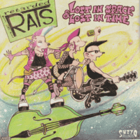

the Retarded Rats - Lost In Space and Lost In Time (Album, 2013)
01 - Intro
02 - Kick Ass Psychos Rule The Night (2:11)
03 - Song X (1:55)
04 - Retards Rock (3:01)
05 - Pony Girl (1:35)
06 - Rats Fever (1:43)
07 - True Chick (2:15)
08 - White Light (3:06)
09 - This Is Not A Laugh Song (1:34)
10 - Wreck To Wipe Out (2:44)
11 - I'm In Pittsburgh (And It's Raining) (2:23)
12 - Mindbound (2:31)
13 - Lunacy (2:24)
14 - Hold On (2:17)
15 - You Won't Bring Me Down (1:57)
© Suzy Q Records 2013 :: [SQ-LP-005] © Killjoy Records 2013 / 2015 :: [Kill-006]
Notes
Germany.
Amazing Anna - Double bass, Vocals
Mutant Anne - Drums, Backing vocals
Flipper Killjoy - Guitar
Heiko Müller - Guitar (Track 14 "Hold On")
Recorded by Mighty Mischka
Original release included Tino Billy Song (2:13) as tenth track
All songs are credited to and written by the Retarded Rats, but one (I'm In Pittsburgh (And It's Raining)) is written-by Jim Carsten
reference information: Discogs®
Review
068/366 (Project 366)
Women leads Psychobilly. A bit garage, slightly trash and rather old school sound! Songs and performing are very magnetic.